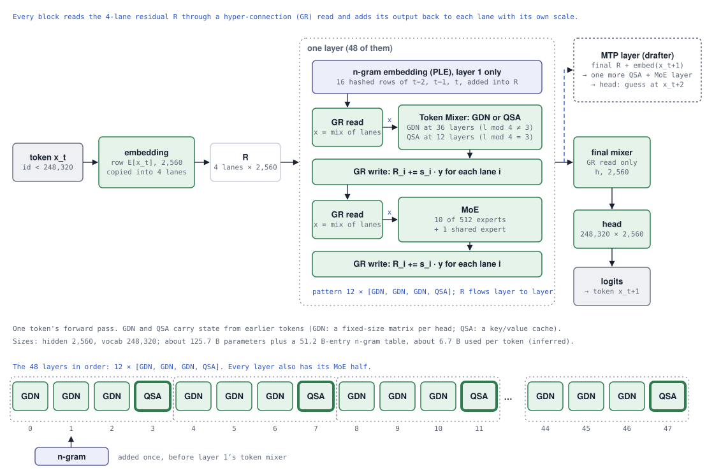
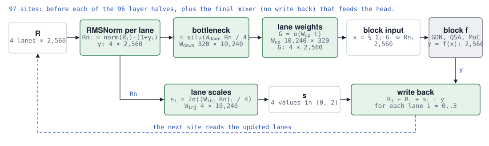
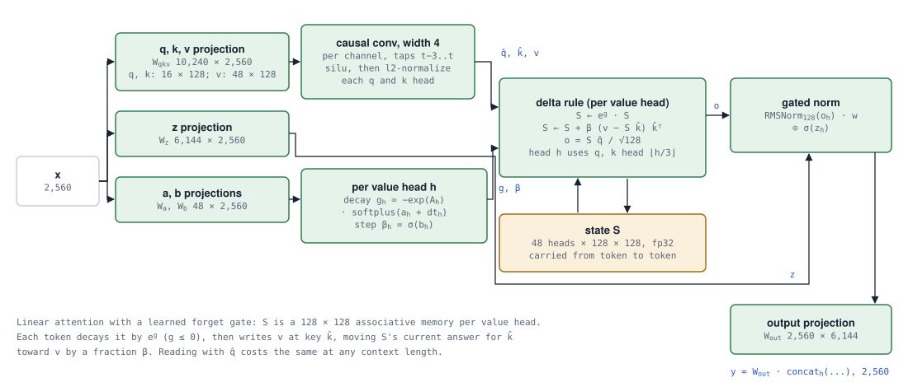
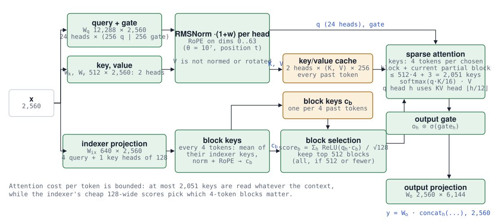
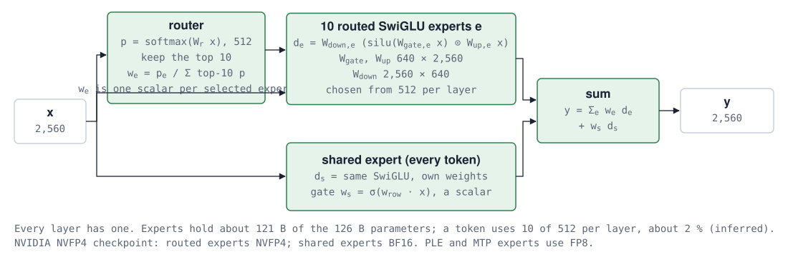
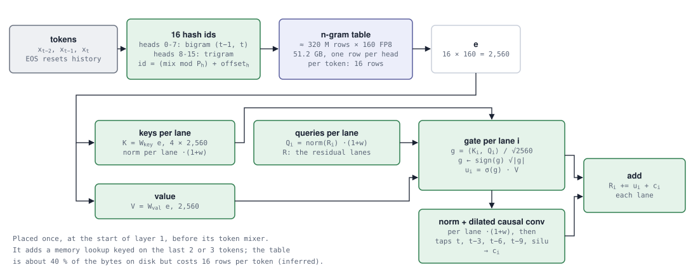
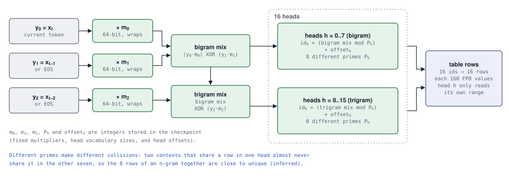
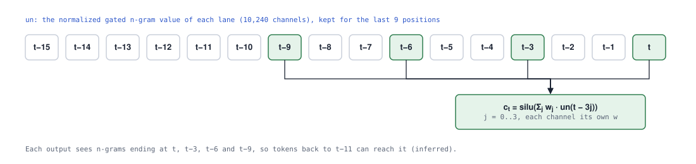
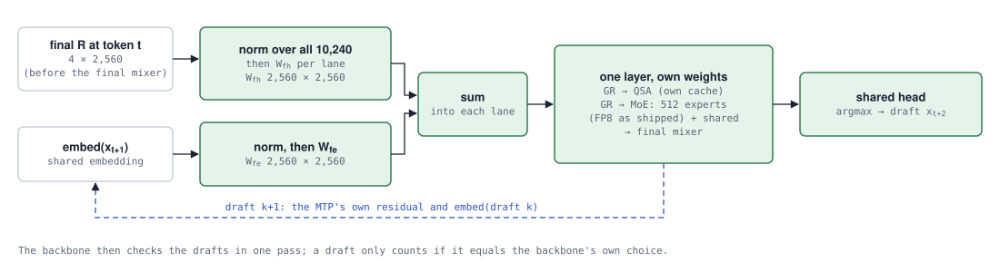

A Very Gentle
Walk Through of
Qwen-3.8-
Flash-Next
You already know the transformer.
Let’s follow one token through what changed.
Keep your Llama 3 mental model: embeddings, residual connections, token mixing, and feed-forward layers. We’ll change one piece at a time, until this newer architecture feels familiar, too.
a different route.
KEEP THE SKELETON. SWAP THE PARTS.
The big picture
In Llama 3, a block asks two questions: “What should I read from other tokens?” through attention, and “What should I compute from that?” through a dense SwiGLU feed-forward network. Flash-Next still has a mixer half and a feed-forward half. The machinery around and inside them changes.
There are 48 backbone layers. Three Gated DeltaNet (GDN) layers are followed by one indexed sparse-attention (QSA) layer, repeated twelve times. Every layer has a mixture-of-experts (MoE) half. A single n-gram lookup adds a different kind of memory at the start of zero-indexed layer 1 (the second layer), before its token mixer.

The decoder still predicts the next token. The changes are about how information moves, where it is stored, and how much work each token activates.
FROM ONE RUNNING SUM TO FOUR
The residual gets more room
Recall Llama 3’s update: h ← h + block(norm(h)). Each block adds its answer to one running sum. Flash-Next keeps four full residual vectors, each 2,560 values wide. These are four lanes, not four slices of a single vector.
Each block reads a gated mixture of the lanes, computes one output, then writes that output back to each lane with a different strength. Over depth, the lanes can accumulate different weightings of the same block outputs.
A block produces y = 2. Move its write strength for lane 2 and watch only that lane’s update change.
The real model learns token-dependent strengths in (0, 2). Slider endpoints show the limiting cases; this toy is not a model inference.

A gate on the way in
Normalize each lane, then apply a separate sigmoid read gate to every channel. Average the four gated lanes to get the block’s 2,560-value input.
A read gate is a learned volume control for what the next block reads. The model computes a score a from the current normalized lanes, then passes it through the sigmoid function:
Sigmoid smoothly turns any real score into a number between 0 and 1. A very negative score gives a gate near 0, suppressing that lane’s contribution; a very positive score gives a gate near 1, passing almost all of it through. A score of 0 gives a gate of 0.5.
For example, if one normalized channel has value 0.8 and its gate is 0.25, its gated contribution is 0.25 × 0.8 = 0.2, before the four-lane average. The gate scales the value; a negative channel stays negative.
The read scores come through a narrow learned bottleneck: t = SiLU(Wdown · r / 4), then G = sigmoid(Wup · t). Here Wdown is 320 × 10,240 and Wup is 10,240 × 320. The bottleneck lets the gates depend on all lanes without a full 10,240 × 10,240 matrix.
There is one read gate for every channel of every lane: 4 × 2,560 gates at each site. They change with the token and the current lanes. Unlike attention’s softmax weights, these gates do not have to sum to 1 across lanes: each is independently bounded by sigmoid, and the gated values are then summed and divided by four.
A gate on the way out
Compute one scalar write strength per lane. Add the same block output y to all four lanes, scaled differently.
To get those four scalars, first concatenate the four normalized lanes into one 10,240-value vector (4 × 2,560). A learned projection with shape 4 × 10,240 turns it into four scores—one for each destination lane:
a = (Winj · r) / 4
si = 2 · σ(ai)
Each score is a learned weighted sum of all four normalized lanes, divided by four. Passing it through sigmoid and multiplying by 2 gives a write strength between 0 and 2. A score of 0 produces si = 1, the usual residual-add strength; negative scores weaken the write, and positive scores strengthen it.
The projection weights are learned during training and belong to this particular gated-residual site. The four strengths are recomputed from the current lanes for each token. Each strength scales the block’s entire output vector for its destination lane, whereas the read gates have a separate value for every channel. The write strengths do not have to sum to 1.
The read gates use a 320-wide bottleneck; the write gates use a separate projection. Both depend on the current normalized lanes. There are 97 gated-residual sites: two per layer, plus one read-only site before the output head.
Is this the same as four parallel transformers?
No. Each half-block still computes one output vector. The lanes provide different running mixtures for later blocks to read. They interact through the gates and the mixed read; there is no additional matrix directly shuffling one lane into another. The checkpoint calls this machinery hyper_connection; we’ll call it “gated residual,” or GR.
Think “a more flexible residual connection.” The extra lanes are activations for the current token, not four histories of past tokens.
COMPRESS MOST OF THE TIME. RETRIEVE SOME OF THE TIME.
Two ways to remember
Llama 3 attention keeps past keys and values and looks back at them. Flash-Next alternates between a fixed-size learned memory and selective access to stored tokens. The two mechanisms make different tradeoffs.
Gated DeltaNet / GDN
Picture a small, writable associative memory. A key describes where to write; a value describes what to remember. Rather than append another KV entry, GDN updates a fixed-size matrix.

The decay is computed per value head as g = −exp(A) · softplus(a + dtbias), so exp(g) is a retention factor between zero and one. The step size β = sigmoid(b) controls how strongly to correct the stored answer. Both a and b come from learned projections of the current input; A and dtbias are learned head parameters. The output gate is a separate sigmoid applied after the state readout and per-head RMSNorm.
The “delta” is a correction: compare the value you want to store with the memory’s current answer for that key, then write a scaled version of the error.
Show me the recurrence and shapes
S ← S̄ + β (v − S̄k̂) k̂ᵀ
o = S q̂ / √128
Here S is written in value-by-key orientation. Normalized q̂ and k̂ are 128-wide. Each layer has 48 value heads with a 128 × 128 state per head; groups of three share one of 16 query/key heads. β is a sigmoid step size; g is a learned nonpositive decay. Before this update, q/k/v pass through a width-4 causal convolution and SiLU, and q/k are L2-normalized. Afterward come a per-head RMSNorm, a sigmoid output gate, and a projection.
Indexed sparse attention / QSA
This part will feel more familiar: queries, keys, values, RoPE, and softmax attention. The new step comes before attention: a lightweight indexer chooses which blocks of past tokens are worth reading.

Toy view: 8 of 32 blocks selected. Real QSA selects up to 512 four-token blocks, plus the unfinished current block. Selection changes with the query.
The full mechanism uses 24 query heads and 2 KV heads, each 256 wide. RoPE acts on the first 64 dimensions of q and k. Four small indexer query heads score block summaries; attention then reads individual token keys and values from the selected blocks.
B = tokens in top512 blocks + current unfinished block
attention(q, KB, VB) = softmax(q KBᵀ / 16) VB
The indexer projects x into four 128-wide query heads and one 128-wide key head. Each completed four-token block gets a summary key cb from the mean of its indexer keys, normalized and rotated. When there are at most 512 completed blocks, all are retained. The main attention output is multiplied channel by channel by a sigmoid gate from the other half of its query projection, then projected to 2,560 values. Its KV heads are shared by groups of twelve query heads.
GDN carries forward a compressed state. QSA looks back at selected token records. The architecture interleaves both, rather than asking one mechanism to do everything.
THE FEED-FORWARD NETWORK BECOMES A CHOICE
A team of small experts
You know SwiGLU from Llama 3. Keep that computation, make many smaller copies, and add a router that chooses which copies run. That is the core of a mixture of experts.
In every Flash-Next layer, the router scores 512 experts, selects the top 10, and renormalizes their softmax probabilities to sum to one. A separate shared expert runs for every token, scaled by its own sigmoid gate.

Illustrative routing, not trained router scores. Expert IDs carry no assumed human-readable specialty.
p = softmax(Wrouter x)
wi = pi / Σj ∈ top10 pj
Wgate and Wup each have shape 640 × 2,560; Wdown has shape 2,560 × 640. The router has shape 512 × 2,560. The shared expert has its own SwiGLU weights and a learned 2,560-value vector for its sigmoid gate.
A naming nuance: “up” and “down” describe conventional FFN stages. Wup maps the hidden vector into the intermediate space; Wdown maps the intermediate result back to the hidden space. In Llama 3’s dense FFN, that intermediate space is wider, so “up” expands and “down” contracts. Each expert here instead follows 2,560 → 640 → 2,560: Wup contracts and Wdown expands. The conventional names remain. Wgate also maps 2,560 → 640, producing the gate branch that multiplies the up branch element by element.
Each expert has intermediate width 640. A token uses only a fraction of the routed expert weights, but those unselected weights must still be stored somewhere. That distinction separates total model capacity from active computation per token.
The feed-forward math remains SwiGLU. The big difference is conditional execution: ten routed networks and a shared network replace the one dense FFN.
HASH → LOOK UP → GATE → FILTER → ADD
N-gram embedding, step by step
An n-gram is a sequence of n consecutive tokens. A bigram has two; a trigram has three. Llama 3 looks up an embedding for one token at a time. This block also looks up learned vectors for the current token’s bigram and trigram, giving familiar short patterns a direct route into the residual.
The checkpoint calls this block PLE. It runs once, at the start of zero-indexed layer 1. Its raw lookup depends only on the last three token IDs; a later gate checks the result against the current residual, which already contains contextual information from layer 0.

1. Choose the two-token and three-token contexts
At position t, read y0 = xt, y1 = xt−1, and y2 = xt−2. Missing positions use EOS (ID 248044). If y1 is EOS, replace y2 with EOS too, so a lookup cannot cross an end-of-text boundary.
| Current token | Bigram | Trigram |
|---|---|---|
| The | EOS, The | EOS, EOS, The |
| cat | The, cat | EOS, The, cat |
| sat | cat, sat | The, cat, sat |
| EOS | sat, EOS | cat, sat, EOS |
| A (after EOS) | EOS, A | EOS, EOS, A |
2. Hash these contexts into sixteen row addresses
A direct table for every possible trigram would be enormous. Instead, fixed integer hashes map token combinations into a bounded set of rows. Multiply each token ID by its own fixed 64-bit multiplier, with wraparound modulo 2⁶⁴. XOR the products to form a bigram mix and a trigram mix.

b = m0 XOR m1
q = b XOR m2
rowh = offseth + nonnegativemod(mixh, Ph)
mixh = b for h = 0…7; q for h = 8…15
The sixteen primes Ph are just above 20 million. Each head owns a separate range of roughly 20 million rows. The hash arithmetic interprets the wrapped mix as signed before taking a nonnegative remainder. Multipliers, primes, and offsets are fixed checkpoint integers; the table values are learned, the hashing step is not.
Hash collisions are possible: different token sequences can select the same row. Multiple heads provide several separate lookup components, but do not make the table collision-free.
3. Gather sixteen rows and concatenate them
Each row contains 160 FP8 E4M3 values. One BF16 scale shared by the table converts stored values to real values. Concatenate the rows in head order:
16 × 160 = 2,560 values
The first 1,280 values come from bigram heads and the last 1,280 from trigram heads. The table contains 320,001,536 rows, stored in 128 shards of 2,500,012 rows. The same recent token IDs produce the same e, regardless of the earlier sentence.
4. Project the lookup into a value and four keys
K = Wkey · e [4 × 2,560 values]
Wval is 2,560 × 2,560. Wkey is 10,240 × 2,560. V is shared across lanes; K splits into one key Ki per lane. Normalize each key with a learned per-lane RMSNorm. Here “key” and “query” describe a compatibility test between one fetched vector and each lane, rather than attention over a list of tokens.
5. Let the current context gate the fetched value
Normalize residual lane Ri into a query Qi, using its own learned RMSNorm weights. Compare that query with the corresponding normalized lookup key:
gi = sign(di) · √max(|di|, 10⁻⁶)
ui = sigmoid(gi) · V
The dot product measures compatibility; the signed square root compresses its magnitude before sigmoid. Each lane gets one scalar gate, multiplying the entire shared value vector. A gate near zero admits little; a gate near one admits almost all of V.
This is where broader context affects the lookup’s immediate injection. A useful intuition is that the gate can suppress a fetched pattern that does not fit the sentence—including an unhelpful hash collision. That is an interpretation of the mechanism, not a guarantee that every collision is detected. Historical gated values also carry their earlier contexts into the next step.
6. Filter the gated values across time
Normalize each ui into uni, then apply a depthwise causal convolution: each of the 10,240 channels has four learned weights and is filtered independently. Width 4 and dilation 3 mean the taps are nine, six, three, and zero positions back.

ci(t) = SiLU(Σj₌0³ wi,j ⊙ uni(t − 3j))
The state retains nine preceding positions of un. The furthest tap is t−9, whose trigram can contain token t−11: an effective reach of twelve token positions, inferred from the tap spacing and trigram width. This does not make the raw lookup itself a twelve-token hash.
7. Add both paths directly to the residual
The direct term is ui before normalization; uni is used only by the convolution. There is no extra GR write strength here. The lookup’s own lane gate controls its direct contribution. Layer 1’s normal gated read and token mixer run next.
The 2,560-byte figure covers table fetches only. The block also computes projections, norms, gates, and convolution. Its state contains two previous token IDs and nine positions × 10,240 normalized gated values—about 0.2 MB in BF16. Because row addresses depend only on token IDs, a serving implementation can prepare lookup fetches before the residual-dependent gate is ready.
The hash and table answer “what short token pattern is this?” The residual gate answers “how much of this stored value fits here?” The temporal filter mixes recent gated answers, and both paths enter the four lanes.
A SMALL HELPER FOR GENERATION
Thinking one token ahead
The backbone still produces next-token logits. An additional multi-token prediction (MTP) layer can propose the token after that, so a serving system can verify several positions together.

The final backbone read produces h with 2,560 values. An untied 248,320 × 2,560 output matrix turns h into vocabulary logits. The embedding and head are separate weights, and there is no extra RMSNorm between the final gated read and the head.
The drafter uses the backbone’s final four lanes before their final merge. It combines projected residuals with the next token’s embedding, then runs its own QSA and MoE layer. It shares the embedding and output head, but has its own layer weights and attention cache.
For more proposals, it feeds on its own output residual and the previous draft’s embedding. A serving engine checks the proposed continuation. A draft is a guess, not an automatically accepted answer.
Separate the model’s prediction from the decoding strategy. MTP supplies proposals for speculative decoding; actual speedup depends on acceptance rates and the serving implementation.
WEIGHTS, ACTIVATIONS, AND HISTORY ARE DIFFERENT THINGS
What stays in memory?
The four residual lanes belong to the current token’s computation. The GDN matrices and convolution histories survive between tokens. QSA retains keys, values, and block summaries whose storage grows with sequence length.
Per sequence. Decimal MB/GB, BF16 QSA cache and FP32 GDN matrices. Bars share a fixed 6.64 GB scale. Excludes model weights, working buffers, convolution history, allocation overhead, and optional MTP cache. This is not a total VRAM estimate.
| Quantity | Estimate | What it tells you |
|---|---|---|
| Backbone parameters | ≈ 125.7 B | Capacity, excluding the n-gram table and MTP. |
| N-gram table | 51.2 B values | A separate large store, shipped in FP8. |
| Active parameters / token | ≈ 6.7 B | Estimated from dense weights, selected experts, and lookup rows used per token. |
| Shipped checkpoint | ≈ 131.7 GB | 77.8 GB backbone + 51.2 GB table + 2.7 GB MTP; rounded figures. |
The checkpoint mixes formats: routed backbone experts are NVFP4, the table is FP8, and many dense weights are BF16. Parameter count, stored bytes, active compute, and runtime memory are related—but none is interchangeable with another.
BACK TO THE WHOLE MODEL
You still know the transformer.
Now follow one token end to end. Look up its embedding and copy it into four lanes. Read those lanes through gates; mix token information; write back through gates. Read again; route through experts; write back again. Add the n-gram lookup at layer 1. Repeat through all 48 layers, merge the lanes, and project to next-token logits.
| You know from Llama 3 | Carry forward to Flash-Next |
|---|---|
| One residual stream | Four full lanes with gated reads and writes |
| Attention in every block | 3 GDN + 1 QSA, repeated twelve times |
| Dense SwiGLU FFN | 10 of 512 experts plus a gated shared expert |
| One-token embedding lookup | Also a bigram / trigram lookup at the start of layer 1 |
| Final RMSNorm → head | Final gated read → head, no separate final RMSNorm |
| Next-token logits | Still next-token logits, plus an optional MTP drafter |
One architecture. Different kinds of memory.
Residual lanes carry information across depth.
GDN carries a compressed state across time.
QSA retrieves selected past token records.
Experts and n-gram tables store learned knowledge in weights.
GO ONE LEVEL DEEPER
Notes & sources
This guide distinguishes architecture descriptions, shape-derived estimates, and illustrative intuition. The Qwen team’s paper describes the architecture and its design experiments. Additional references provide background on Llama 3 and hyper-connections.
- On the Design of Qwen3.8-Next Architecture: Evaluation, Efficiency, and Training Stability ↗Zihan Qiu et al., Qwen team (2026). Architecture design and ablations covering hybrid token mixing, gated residuals, n-gram embeddings, efficiency, and training stability. arXiv:2608.30320.
- Llama 3 reference implementation ↗Baseline for the pre-norm residual, attention, and dense SwiGLU comparison.
- Hyper-Connections · Zhu et al. ↗Background on expanded residual connections. Flash-Next’s gated implementation differs from the paper’s basic form.
All interactive examples are teaching illustrations or arithmetic from the tensor dimensions shown here. No model runs in this page. Chapter and layer numbering: chapters start at 00; model layers are zero-indexed.